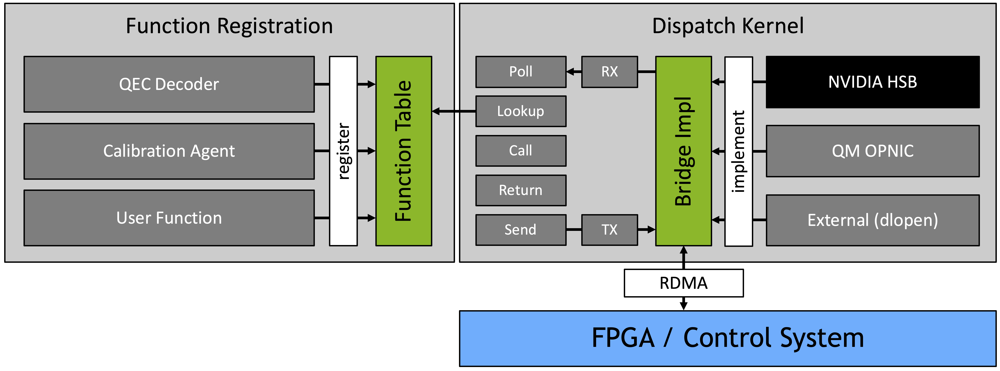
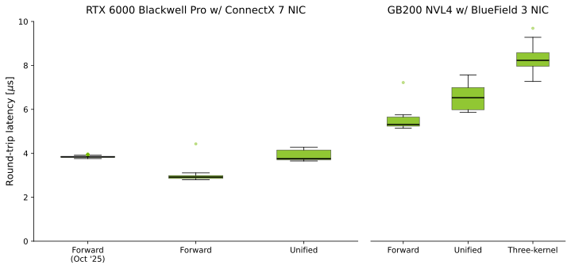

Introducing cudaq-realtime for programming the Logical QPU
Fault-tolerant quantum computing demands a tight classical–quantum feedback loop in which QEC decoding and autocalibration occur throughout QPU operation.
Our new library, cudaq-realtime, builds on NVQLink by giving developers a runtime API for microsecond-latency callbacks between GPUs and quantum controllers.
In October 2025, we announced NVIDIA NVQLink, an open platform architecture that brings accelerated computing into the quantum stack.
At GTC 2026, NVQLink became publicly available through the release of the cudaq-realtime API in the NVIDIA CUDA-Q platform, allowing developers to write CUDA-Q code sending data back and forth between a quantum controller and GPUs. And partners are already taking advantage of this across the quantum computing ecosystem.
- Dell has validated XE7745, XE9680, R7715 and R770 servers as Real-time Host platforms, reproducing NVQLink latencies under 4 µs.
- Quantum Machines have integrated
cudaq-realtimewith their Open Acceleration Stack. - Qblox has adopted
cudaq-realtimeinto their control electronics for OQC's full-stack quantum systems, enabling microsecond-level hybrid feedback loops. - SDT has deployed the first tightly-coupled hybrid quantum-classical data center in Korea, using SDT's controller and NVQLink to connect an Anyon Computing QPU to NVIDIA GPUs.
- Atom Computing announced the successful integration of NVQLink into their proprietary control-systems stack.
- IQM and Zurich Instruments are building a real-time QEC demonstrator combining an IQM 20-qubit QPU, the Zurich Instruments ZQCS Quantum Control System, and NVQLink.
- Quantinuum has demonstrated demanding real-time QEC, performing correlated decoding of the Bring code on their Helios system with NVIDIA's GPU-accelerated BP+OSD decoder from the CUDA-Q QEC library.
- Q-CTRL's software has obtained a 50x reduction in classical overhead and 5x speedup in overall wall-clock time by integrating NVQLink.
- Lawrence Berkeley National Laboratory used the architecture for the first integration of the open-source QubiC control system with NVIDIA DGX Spark and plans to perform AI-enhanced quantum control experiments, including readout classification and gate tuning.
- Pacific Northwest National Laboratory is developing an open-source integration of the QICK FPGA control board with GH200 Grace Hopper via NVQLink, targeting GPU-accelerated QEC.
- Elevate Quantum has launched Q-PAC, a commercially deployable open-architecture quantum system with QuantWare, Qblox, Q-CTRL, and Maybell components - including NVQLink-based GPU-cluster integration on the roadmap for 2026.
In this post we go under the hood to show how cudaq-realtime works, how it connects to real-time QEC decoding, what kind of latency you can expect across different host hardware, and how to reproduce these results on your own system.
Why real-time compute matters for QPUs
QPUs require access to high-performance co-processing that can respond to function calls in real-time, faster than qubits decohere and keeping up with system drifts that cause gate fidelities to wander. The most stringent latency constraints come from QEC decoding, a massive, single-user inference task that has to happen right alongside the quantum processing with absolutely minimal latency. This task sets the clock speed of the QPU, so speeding it up is imperative.
A second critical workload is QPU calibration, in which measurements of physical properties of the QPU inform control parameters. Calibration happens during QPU bringup and continues during its online life while it performs work. With math acceleration and low latency data transfer, builders can apply adaptive measurement protocols and machine learning to make calibration orders of magnitude faster and more effective in reaching higher fidelities.
The cudaq-realtime library
The core purpose of cudaq-realtime is to provide the ability for an FPGA to call functions on the GPU, getting the result back in microseconds.
The FPGA sends a request,
the GPU dispatches it to a registered handler,
and the response goes back,
all inside a persistent CUDA kernel with no host-side intervention on the hot path.

cudaq-realtime.We separated the dispatch logic from the network transport,
so cudaq-realtime can work with any physical link between an FPGA and a GPU.
The NVQLink network stack is a reference implementation,
built on RoCE via the Holoscan Sensor Bridge (HSB) FPGA IP and SDK, and a ConnectX NIC.
But the network stack is pluggable via a bridge interface:
any control system that can deliver packets to the GPU can serve as a cudaq-realtime transport by implementing this bridge.
Quantum Machines, for example, have integrated their Open Acceleration Stack through the OPNIC,
connecting their OPX1000 control system directly to CUDA-Q.
Higher-level libraries register their own handlers on top of this dispatch. For example, CUDA-Q QEC registers its decoders, so syndrome data from the FPGA goes straight to a GPU-accelerated decoder with no extra coordination.
Kernel execution modes
cudaq-realtime supports several kernel execution modes that trade off latency against flexibility.
Three-kernel dispatch
The default mode uses three CUDA kernels that cooperate through GPU-visible ring buffers. One receives RDMA packets from the FPGA and writes them into a receive buffer, one polls that buffer, looks up the right handler, calls it, and writes the result to a transmit buffer, and one sends the response back to the FPGA.
The dispatch kernel never touches the network directly. It only sees ring buffer flags and data pointers, which means the same dispatch logic works no matter what transport bridge is underneath.
cudaq_ringbuffer_t ringbuffer{};
ringbuffer.rx_flags = rx_flags_dev;
ringbuffer.tx_flags = tx_flags_dev;
ringbuffer.rx_data = rx_data_dev;
ringbuffer.tx_data = tx_data_dev;
ringbuffer.rx_stride_sz = slot_size;
ringbuffer.tx_stride_sz = slot_size;
cudaq_dispatcher_set_ringbuffer(dispatcher, &ringbuffer);
cudaq_dispatcher_set_launch_fn(dispatcher,
cudaq_launch_dispatch_kernel_regular);
cudaq_dispatcher_start(dispatcher);
Unified kernel
The unified mode puts all three stages into one persistent kernel that handles RDMA receive, dispatch, and transmit directly through DOCA GPUNetIO. This cuts out the inter-kernel handoff and gives us the lowest dispatch latency, but it requires transport-specific code in the kernel.
cudaq_dispatcher_config_t config{};
config.kernel_type = CUDAQ_KERNEL_UNIFIED;
cudaq_dispatcher_set_unified_launch(dispatcher,
hololink_launch_unified_dispatch, &transport_ctx);
cudaq_dispatcher_start(dispatcher);
Transport-only forwarding kernel
The forward mode bypasses cudaq-realtime dispatch entirely.
A lightweight GPU kernel from the transport layer echoes
each RDMA packet back through a symmetric ring buffer.
This kernel type provides a clean baseline measurement of the network round trip alone.
Cooperative kernel
For workloads that need grid-wide synchronization—multi-block belief propagation decoders, for example—we can launch the dispatch kernel in cooperative mode.
After a grid.sync(), all threads across all blocks call the handler together,
letting decoders spread work across the full GPU.
cudaq_dispatcher_config_t config{};
config.kernel_type = CUDAQ_KERNEL_COOPERATIVE;
cudaq_dispatcher_set_launch_fn(dispatcher,
cudaq_launch_dispatch_kernel_cooperative);
Benchmarking latency
We included a benchmarking function in cudaq-realtime to enable library users to understand the performance of NVQLink systems they have built or bought.
This benchmark is intentionally simple, launching the dispatch kernel with a chosen kernel mode and measuring transit times using an integrated logic analyzer in the HSB IP.
By using the benchmark with different kernel modes, we can isolate different contributors to latency.
- Forward mode measures buffer-to-buffer transport strictly, without any dispatch or function-call overhead.
- Unified mode adds the latency of identifying a function and invoking the handler.
- Three-kernel mode adds the latency of transfer among the RX, dispatch, and TX kernels.
We measured FPGA–GPU–FPGA round-trip latency using PTP timestamps on an RTX 6000 Blackwell Pro with ConnectX 7 NIC and a GB200 NVL4 with BlueField 3 NIC, in transport-only forward, unified, and three-kernel dispatch modes.

cudaq-realtime latency benchmark.| Host | Kernel | Min (µs) | Median (µs) | Max (µs) |
|---|---|---|---|---|
| RTX 6000 Blackwell Pro w/ ConnectX 7 (Oct '25) | Forward | 3.76 | 3.84 | 3.96 |
| RTX 6000 Blackwell Pro w/ ConnectX 7 | Forward | 2.80 | 2.92 | 4.43 |
| RTX 6000 Blackwell Pro w/ ConnectX 7 | Unified | 3.65 | 3.76 | 4.28 |
| GB200 NVL4 w/ BlueField 3 | Forward | 5.14 | 5.31 | 7.22 |
| GB200 NVL4 w/ BlueField 3 | Unified | 5.86 | 6.53 | 7.56 |
| GB200 NVL4 w/ BlueField 3 | Three-kernel | 7.27 | 8.23 | 9.69 |
For reference, we quote our prior results from the October 2025 NVQLink paper. Since that measurement we have improved the underlying transport by roughly 0.9 µs, bringing the transport-only latency from 3.84 µs down to 2.92 µs.
Our GB200 NVL4 measurements were performed using a BlueField 3 SmartNIC on an experimental basis and are subject to further optimization.
Real-time QEC decoding with cudaq-realtime and CUDA-Q QEC
cudaq-realtime is designed to be a building block.
CUDA-Q QEC uses it by registering decoders as RPC handlers in the dispatch kernel,
so that syndrome data arriving from the FPGA is routed directly to the right GPU-accelerated decoder.
The real-time QEC workflow starts with a detector error model (DEM) that captures the error characteristics of the device.
import cudaq
import cudaq_qec as qec
cudaq.set_target("stim")
noise = cudaq.NoiseModel()
noise.add_all_qubit_channel("x", cudaq.Depolarization2(0.01), 1)
dem = qec.z_dem_from_memory_circuit(code, qec.operation.prep0, 3, noise)
From the DEM, you configure a decoder and save the configuration. Before running circuits, CUDA-Q QEC loads the config, sets up the parity check matrix, and registers the decoder with the runtime.
config = qec.decoder_config()
config.id = 0
config.type = "nv-qldpc-decoder"
config.block_size = dem.detector_error_matrix.shape[1]
config.syndrome_size = dem.detector_error_matrix.shape[0]
config.H_sparse = qec.pcm_to_sparse_vec(dem.detector_error_matrix)
config.O_sparse = qec.pcm_to_sparse_vec(dem.observables_flips_matrix)
# ... set D_sparse and decoder-specific params from DEM ...
multi_config = qec.multi_decoder_config()
multi_config.decoders = [config]
with open("config.yaml", 'w') as f:
f.write(multi_config.to_yaml_str())
qec.configure_decoders_from_file("config.yaml")
At runtime, syndrome measurements flow to the decoder and corrections come back. The same kernel code works in simulation and on physical hardware—the runtime routes calls to the appropriate backend.
import cudaq
import cudaq_qec as qec
from cudaq_qec import patch
@cudaq.kernel
def qec_circuit() -> int:
qec.reset_decoder(0)
data = cudaq.qvector(3)
ancz = cudaq.qvector(2)
ancx = cudaq.qvector(0)
logical = patch(data, ancx, ancz)
prep0(logical)
for _ in range(3):
syndromes = measure_stabilizers(logical)
qec.enqueue_syndromes(0, syndromes, 0)
corrections = qec.get_corrections(0, 1, False)
if corrections[0]:
for i in range(3):
x(data[i])
return cudaq.to_integer(mz(data))
The enqueue_syndromes call is asynchronous.
The QPU keeps running while the GPU decodes,
and only blocks when get_corrections is called.
This pipelining keeps the QPU productive during the decode window.
CUDA-Q QEC ships with several decoder algorithms that all work through this interface: GPU-accelerated Relay-BP for qLDPC codes, TensorRT-based AI decoders, and sliding window decoders for tight latency budgets. The CUDA-Q QEC documentation and real-time decoding examples have the full details.
Get started
The cudaq-realtime library is available today in the realtime directory of the CUDA-Q repository.
Full documentation, including API reference and tutorials, is at the cudaq-realtime docs.
The build produces libcudaq-realtime.so and a self-extracting installer.
You can install it on any CUDA-capable system with a compatible network interface to FPGA.
Connect an FPGA via RoCE,
or use the built-in emulator if you do not have one yet,
and run the latency benchmark.
cd realtime/unittests/utils
# Transport-only forward (FPGA echo, no dispatch)
./hololink_test.sh --forward
# CUDA-Q unified kernel (lowest CUDA-Q latency)
./hololink_test.sh --unified
# CUDA-Q three-kernel (default, transport-agnostic)
./hololink_test.sh
# Use --emulate for development without an FPGA
./hololink_test.sh --emulate
The benchmark writes ptp_latency.csv with per-sample round-trip timestamps.
Compare your numbers to the characterization in the NVQLink paper.
For a minimal working example,
see realtime/examples/gpu_dispatch/,
which registers a handler and processes requests through the dispatch kernel.
Whether you are building QPUs, developing decoders, or bringing GPU acceleration into your quantum lab,
cudaq-realtime is the starting point for real-time programming on NVQLink.